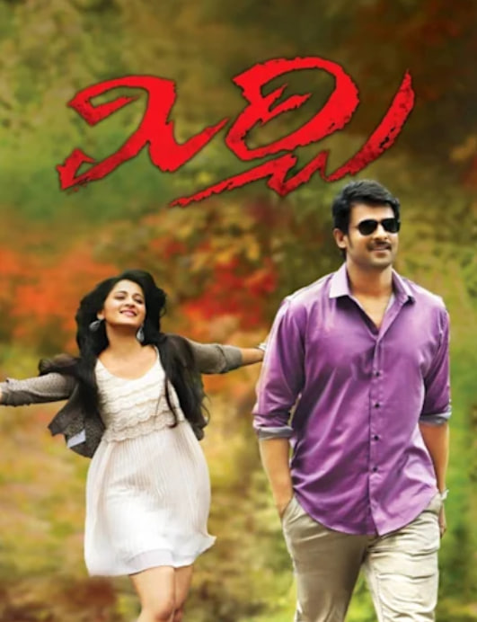
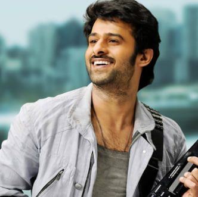
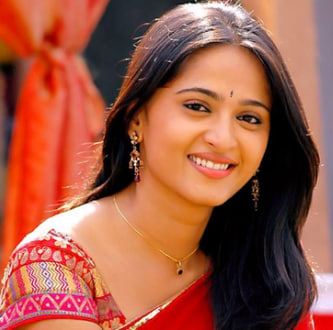
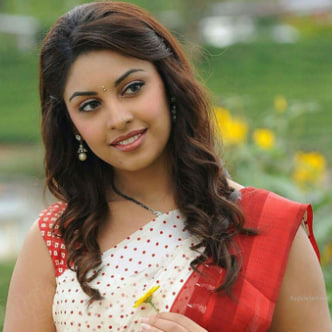
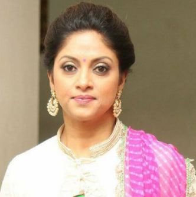
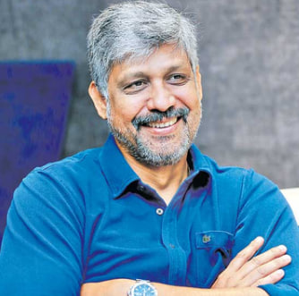

Mirchi (2013)
Written and Directed by Koratala Siva
Music by Devi Sri Prasad
Production by UV Creations
🎭 Cast

Prabhas
Jai

Anushka
Vennela

Richa
Manasa
Sathyaraj
Deva

Nadhiya
Latha

Sampath Raj
Uma
Brahmanandam
Veera Pratap
Subbaraju
Poorna
Overview
Mirchi is a Telugu action-drama directed by Koratala Siva. It stars Prabhas and Anushka Shetty in lead roles, with Richa Gangopadhyay in an important role. The film revolves around a man who believes in resolving conflicts through peace rather than violence. Set against a backdrop of family rivalries, it blends action, romance, and emotional drama, delivering a strong social message while keeping the audience engaged with commercial entertainment elements.
What’s Good
Prabhas really done a great job. His screen presence and powerful dialogue delivery make the role very impactful.
Anushka Shetty also fits well, she looks graceful and adds emotional depth.
The action scenes and elevations work very well, especially interval and climax.
Dialogues are strong and meaningful, they connect with audience nicely.
Music by Devi Sri Prasad adds good energy to the movie.
What’s Weak
The story is somewhat predictable, you can guess what happens next.
Some scenes in the second half feel a bit slow.
Romance portions could have been more engaging.
Summary
Mirchi is a well-made action-drama that blends emotions, romance, and strong mass elements. The story follows a man who believes in solving conflicts with peace instead of violence. Performances, especially by Prabhas, along with impactful dialogues and stylish action sequences, keep the audience engaged.
Despite having a familiar storyline, the film manages to entertain with its execution and emotional depth. The second half feels slightly slow in parts, but the overall narrative remains engaging. Music by Devi Sri Prasad adds energy to the film, and the supporting cast also performs well. The movie successfully delivers a mix of action, sentiment, and romance, making it a satisfying commercial entertainer with a meaningful message about choosing peace.